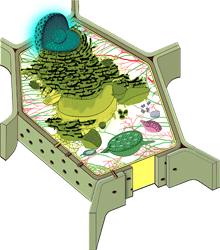

Hi, I noticed that you are still using Internet Explorer 6.
Did you know that IE6 has a huge number of flaws and security issues? Browsers like
Firefox,
Safari or
Chrome provide a way, way better online experience - you should definitely consider upgrading!
Anshudeep Mathur (Anshu)
Technical Skills
- Knowledgable about writing performant SQL queries for OLTP and OLAP.
- Over 5 years of professional experience in Oracle and PL/SQL.
- Limited exposure to C, Java and Objective-C.
- Strong foundation in web development frameworks and common web application stacks.
- Basic training in SAS Enterprise Guide and Text Miner.
- Intermediate to advanced level of understanding of Python and JavaScript.
- Intermediate knowledge of Natural Language processing and Machine learning techniques.
- Advanced knowledge of the Adobe’s Creative Suite, especially Photoshop.
- Intermediate knowledge of non-relational database systems like MongoDB
- Highcharts and D3.js to visualizing data in meaningful ways
Academic Profile
-
January 2012 - (suspended)
MSc in Computer Science.
School of Computer Science (SOCS), University of Guelph, Ontario, Canada.
-
September 2006 – December 2010
Honours Bachelor Degree in Applied Computing and Diploma in Wireless & Telecommunications Technology.
University of Guelph–Humber, Toronto, Canada.
Additional language skills
- Speak, read and comprehend German and Hindi fluently.
- Partly conversant with French.
Download Resume.
updated September 19, 2014
Selected Professional Experience
-
May 2014 – present
Quality Manager - Enterprise, BlackBerry, Waterloo
BlackBerry
-
September 2011 – May 2014
Database Applications Analyst
BlackBerry
-
- With a much higher focus on data warehousing compared to my previous positions at BlackBerry, I help to improve data load processes within the Quality Systems team.
- My tasks include writing performant SQL queries and Oracle PL/SQL procedures, as well as designing ETL processes for business critical reporting environments used by BI and Analytics teams to drive fact-based decision making.
- Involved in data modelling and various ad-hoc data mining exploration activities.
- Leveraging SAS Text Miner and Enterprise Guide for text analytics and reporting facilities (possess basic skills in SAS toolset).
- Sometimes involved in diagnosing and troubleshooting server-side issues relating to performance, crashes, and bugs.
-
January 2011 – September 2011
Database Systems Developer
BlackBerry
-
- I help in leading a team of five developers with the aim of designing and developing large scale web applications for Business Process Modelling.
- Provide live support for business critical applications that are used by over four thousand internal users on a daily basis.
- Leveraging my technical background to assist developers with complex technical problems, including code optimization and debugging.
- Responsible for platform code review and deployment process, as well as maintaining platform stability.
- Optimized Oracle Text for business-specific needs resulting in improved result retrieval time for the bulk of search queries, from more than 30 seconds to less than two. The index searches across ~1.5GB of plain text data.
Past web design and development work
-
-
- This is the official website of Pamela Gough's election campaign for Public School Trustee in the Toronto municipal elections.
- Pamela Gough is running in Ward 3, Etobicoke-Lakeshore, for a position on the Toronto District School Board.
- Update: Pamela Gough was voted the public school trustee for the Etobicoke-Lakeshore region in the 2010 election.
-
Autumn and Winter 2010
Junior Quality Database Developer, 8-Month Co–Op, Research in Motion, Waterloo
BlackBerry
-
- Developed mobile (BlackBerry) applications using HTML5 in PL/SQL, which involved thoroughly optimizing JavaScript, HTML as well as SQL queries.
- Developed and deployed a Blog-extraction application based on RSS feeds. Connected projects included pre-processing the data and creating a user-friendly interface (with advanced functionality).
- Completed a number of projects using Oracle Text, for both full-text searching as well as document classification.
- Adopted the Scrum methodology for agile software development and to keep on top of my backlog.
- Contributed to the UI Design Document for a new project-management platform.
- Worked with an amazing team of four other individuals and helped to significantly improve user support time for a number of tedious and repetitive tasks.
- Utilized XML, XSL, HTML5, Python, PHP, Visual Mining NetCharts, SAS Enterprise Guide, SAS Text Miner, Oracle 11G, Adobe AIR and a multitude of other technologies to develop applications used by ~2000 unique users.
-
-
- Fancy Free Island Cottage is an historic Victorian lake house on a private island in spectacular Big Rideau Lake, available for rentals from June to October.
- It is on the Rideau Canal system, a UNESCO World Heritage Site waterway that runs from Ottawa to Kingston, Ontario.
- Check out the website for details, including the island's fascinating history dating back to the 1870s.
-
Summer and Autumn 2008
Junior Quality Analyst, 8-Month Co–Op, Research in Motion, Waterloo
BlackBerry
-
- Worked closely within a small team of database architects and developers to manage and create a large variety of web-applications for use by over 2000 RIM employees on a daily basis.
- Developed and deployed a functional search engine and interface which searches through over two million internal documents (and growing) using Oracle Text’s Context index. Queries were extensively optimized in order to return relevant results as quickly as possible from a number of data sources.
- Worked with three other colleagues to revamp the internal security system which, in addition to being much more secure, allows tracking of resources and user activity. Over 1500 RIM employees now log in using this system.
- Generating an extensive reporting interface, as well as a user-monitoring dashboard in PL/SQL, similar to Google Analytics, to present user trends and statistics and allow drilling-down from a domain-level to that of the individual user. The dashboard was developed to be easily expandable due to the nature of AJAX calls and procedure input parameters. Graphs were implemented using Google’s Chart and Visualization APIs.
- Developed an Adobe AIR application to be used by RIM for evaluating suppliers around the globe. The application’s interface was designed in Photoshop; all functionality programmed using AJAX/JS/HTML and included an internal SQLite database for offline use. Certain features were implemented to be only available when connected to RIM’s internal network.
- Working in collaboration with a fellow co-op student and staff to upgrade and redesign the internal QA Library website site, thereby increasing the speed of its operations significantly, and optimizing query performance for the Oracle 10g database.
-
-
- Worked with staff at the Riverwood Conservancy to completely re-architect their previously static Web site and convert it to use a content management system.
- Trained and instructed staff in a 6-hour session, as well as providing brief documentation and support, on how to use the CMS tool and integrate their own content correctly.
- The Riverwood Conservancy’s Web site has been featured on TYPOlight’s showcase and has received praise from its Board of Directors.
-
-
- Designed and customized a free online resource for biology students and researchers providing them state-of-the art information on advances in modern plant sciences. Article contributors include leading International scientists.
- Utilization of TYPOlight as the CMS tool, but with extensive custom coding to incorporate various forms of multimedia, while maintaining a simple interface for the content owners.
- The Web site receives over 600 visitors per week from all over the Globe, with over 90% of the visits being completely new (Google Analytics).
-
Summer 2007 – Summer 2008
Part–time position in IT Project Mgt. & System Services Dept. Toronto District School Board, Toronto
http://www.tdsb.on.ca
-
- Successfully completed more than 15 projects that directly impacted the Toronto District School Board (TDSB) and its students over the course of the Summer.
- Designed, programmed and successfully carried out the launch of the redesigned TDSB public and internal home page which caters to around 160,000 visitors every month. This work was done in co-operation with individuals from more than 4 departments.
- Programmed the majority of the “Living and Learning Together” campaign Web site [http://www.learntogether.ca/] whose advertisements ran for a short period on public transportation and on billboards across Toronto.
- Researched and incorporated Google Maps into the existing School profiles using Google’s API. Also used AJAX extensively when possible in order to speed up and simplify applications.
- Extensive programming in Visual Basic for ASP, while utilizing an Oracle database. All web-programming done followed WAI Guidelines and Procedures and passed most Accessibility levels.
- Utilizing WebTrends analytics software, programming in .NET C# programming, and configuring Google search appliance.
-
-
- Designed and programmed four distinct Web sites over the school years 2004/2005 and 2005/2006 for the Jarvis Jargon - the newspaper of Jarvis Collegiate Institute.
- Won four awards by the Toronto Star for their layouts and designs.
- Co-ordinated with a team of six, and compiled the print version of the Jarvis Jargon for 2005/2006.
-
July 2004 – ongoing
University–related projects
Designed, assembled content for and programmed more than six Research-related Web-sites for three well-known Universities.
-
All Web sites were thoroughly optimized for best Search engine results and are constantly re-evaluated and re-checked for errors in order to maintain their site rank and credibility.
Apart from the Laboratory of Plant Development & Interactions, all others work opportunities were obtained through recommendation.
-
January 2004 – Summer 2007
Designing, creating and maintaining the ITC Alumni Webpage, Volunteer
http://www.itcalumni.org
-
- Forged a web-forum for alumni of the International Training Course, Biological Research Center, Szeged Hungary.
- Worked with a team of four former ITC fellows to bring the original idea to live.
- A Symposium resulted from this site, which was held 19th - 21st October 2006 in Szeged, Hungary and involved more than 300 scientists from around the globe.
- The page is now officially sponsored and supported by BRC, Szeged, Hungary.
-
Summer 2003
Joint Project for Siemens JoinMultimedia Europe-wide contest, Munich, Germany*.
A meticulous compilation on “Natural Resources” for the Siemens JoinMultimedia 2003 Europe-wide Competition in collaboration with three other batch mates.
-
- Project entered under the name of FET PAAC (Fossile Energie Träger, Peter, Alex, Anshu, Christian).
- Required extensive work in Macromedia Flash 5.0, Adobe Photoshop 7.0 for creating the various sections of the multimedia presentation.
Personal & School Projects
PubMed Extractor
A site developed to keep track of publications by parsing RSS feeds based on predefined search queries.iPad and iPhone web applications developed using Sencha Touch
HCI project to develop an iPhone application for the Guelph-Humber student website. Loading | Login | HomeNaive Bayes RSS classification system written in Python
Developed during DCCT*4160 - Distributed Information System Architectures course.Ad-Hoc Search Engine written in Python
Group project for the DCCT*4090 - Information Storage and Retrieval Systems course.Chat system created using jQuery
PL/SQL procedure to obtain book information from Amazon using the ISBN number
Honours & Awards
- 1st place in The Toronto Star High-school newspaper contest for both the "Electronic Newspaper, Layout and Design" and "Best Electronic Newspaper" categories for Jarvis Jargon, 2006.
- 1st place and 2nd place in The Toronto Star High-school newspaper contest for the "Best Electronic Version" and "Overall Electronic Newspaper Version", respectively for Jarvis Jargon, 2005.
- *1st place in Siemens JoinMultimedia 2003 Europe-wide competition shared with PAAC Media
EyeVision teammates. Earned a position in Siemens JoinMultimedia “Hall of Fame” 2003.
{kind=link}
{kind=link}
{kind=link}
{kind=link}
{kind=link}
![MicroElectronics Department [MED] / Teaching Resource Center [TRC]](Filez/MEDCRTLogo.jpg){kind=link}
{kind=link}
{kind=link}
{kind=link}
{kind=link}
{kind=link}
{kind=link}
{kind=link}
{kind=link}
{kind=link}
{kind=link}
{kind=link}
{kind=link}
{kind=link}
{kind=link}
{kind=link}
{kind=link}